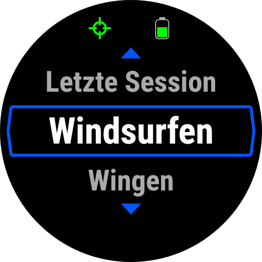
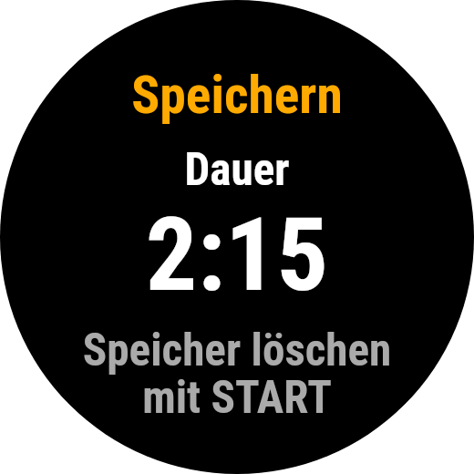
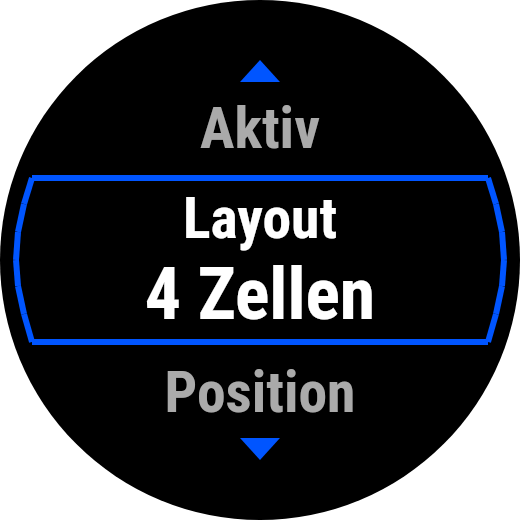
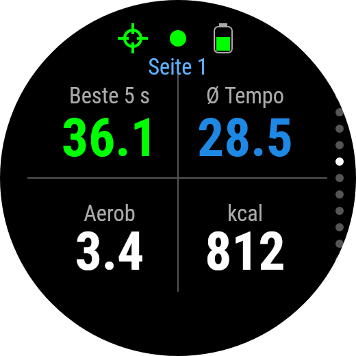

Bedienungsanleitung · Garmin Connect IQ · Windsurfen, Wingen und Surfen
Anleitungsrevision V14 · Stand: 27.11.2026
1 Überblick und Sportarten
SurfsApp zeichnet Windsurf, Wingfoil und Surfen als getrennte Sportarten auf. Jede Sportart hat eigene Einstellungen, eigene Kennzahlen und eigene Anzeigeseiten. So werden beispielsweise Gleitzeit und Halsen nicht mit Surf Paddelzeit oder Wing Sprüngen vermischt.
Windsurfen Gleiten, Halsen, Wenden, Wellenritte, Slides, Jumps und Loops. Die Einzelheiten stehen in dieser Anleitung.Wingen Geschwindigkeit, Strecke, Fahrzustände, Manöver und eine eigene Jump Auswertung. Zur Wingen Anleitung.Surfen Sitzen, Paddeln, Rittzeit und Wellen. Zur Surf Anleitung.
Die Aufnahme wird als Garmin Aktivität gespeichert. Direkt auf der Uhr sehen Sie Live Werte und nach dem Speichern eine Zusammenfassung. Die SurfsApp Web App ergänzt diese Daten durch Karten, Diagramme und sportartspezifische Detailanalysen.
Die drei Sportarten werden auf der Startseite gewählt. Unter Einstellungen → Sportarten legen Sie fest, welche Sportarten dort angeboten werden. Die Einstellungen einer Sportart verändern nicht die Einstellungen der anderen.
Die Bilder in dieser Anleitung zeigen eine runde Uhr mit 260 × 260 Bildpunkten. Schriftgrößen und Abstände können je nach Uhr leicht abweichen. Die Zahlenwerte sind Beispiele.
2 Bedienung
Uhren mit Tasten (fēnix)
Bedienelement
Funktion
START/STOP
Auswählen, bestätigen, Aufnahme starten. Während der Aufnahme: Aktionsmenü öffnen.
HOCH / RUNTER
In Listen auswählen, Werte ändern, während der Aufnahme Seiten blättern.
HOCH lang gedrückt
Einstellungen öffnen, auch während der Aufnahme.
BACK
Eine Ebene zurück. Auf der Startseite beendet es die App. Während der Aufnahme setzt es einen Marker.
Touchscreen
Wird nicht ausgewertet. Wassertropfen lösen nichts aus.
Touch-Uhren mit zwei Tasten (vívoactive 4)
Bedienelement
Funktion
Obere Taste
Auswählen, bestätigen, Aufnahme starten. Während der Aufnahme: Aktionsmenü öffnen.
Untere Taste
Eine Ebene zurück, auf der Startseite App beenden. Während der Aufnahme: Marker setzen.
Wischen nach oben / unten
Blättern in Listen und Seiten, auch während der Aufnahme.
Wischen nach links / rechts
Seiten blättern, nur während der Aufnahme und in der Pause (links = weiter, rechts = zurück).
Tippen
Ohne Funktion. Ausgewählt wird immer mit der oberen Taste.
Langer Druck auf den Bildschirm
Ohne Funktion. Die Einstellungen stehen als eigener Eintrag „Einstellungen“ auf der Startseite und im Aktionsmenü.
Während einer laufenden Aufnahme ist der Bildschirm gesperrt, nur Wischen zum Blättern der Seiten ist möglich. In der Sportwahl, in der Vorschau und in einer von Hand gesetzten Pause ist er frei.
In allen Listen steht der gewählte Eintrag in der Mitte mit blauem Rahmen, die Nachbarn grau darüber und darunter. Blaue Pfeile zeigen bei kurzen Listen, dass es in diese Richtung weitergeht. Jede Liste läuft im Kreis: Nach dem letzten Eintrag folgt wieder der erste.
3 Startseite und Vorschau

Startseite Sportart wählen. „Letzte Session“ erscheint, sobald eine Auswertung gespeichert ist.Vorschau Grünes Dreieck: noch keine Aufnahme. Der grüne Bogen zeigt auf die START-Taste.
Mit HOCH und RUNTER wählen Sie Windsurfen, Wingen oder Surfen. Welche Sportarten sichtbar sind, legen Sie unter „Sportarten“ fest. Steht eine gespeicherte Auswertung bereit, erscheint zusätzlich „Letzte Session“. Auf der vívoactive 4 folgt außerdem „Einstellungen“. Mit nur zwei Einträgen stehen darunter die Versionsnummer und gegebenenfalls eine Meldung.
Sportart wählen und START drücken. Die Vorschau öffnet sich. Es wird noch nichts aufgezeichnet.
In der Vorschau lassen sich alle Seiten ansehen. Nach dem Kompass folgt hier die Seite „Summe“ mit den Summen aller gespeicherten Sessions dieser Sportart.
START drücken, um die Aufnahme zu beginnen. BACK führt zurück zur Sportwahl.
Prüfen Sie vor dem Start die Einstellungen im Menü Modus. Einige davon legen fest, welche Felder die Aktivität bekommt, und gelten deshalb erst ab der nächsten Session (Abschnitt 7).
Reicht der Speicher der Uhr nur für eine kürzere Aufnahme als üblich, erscheint in der Vorschau ein Hinweis mit der möglichen Dauer. Eine Taste schließt ihn.
4 Aufnahme
Aktionsmenü
Aktionsmenü START öffnet es während der Aufnahme.Bestätigung Bei Speichern und Verwerfen ist „Nein“ vorgewählt.
START/STOP öffnet während der Aufnahme das Aktionsmenü:
Pause bzw. Weiter – Aufnahme anhalten oder fortsetzen.
Speichern – Aufnahme beenden und speichern.
Verwerfen – Aufnahme beenden, ohne zu speichern.
Einstellungen – nur auf der vívoactive 4.
Jede Aktion verlangt eine Bestätigung mit „Ja“ oder „Nein“. HOCH und RUNTER wechseln die Auswahl, START bestätigt, BACK führt zurück.
Pause
Die Pause wird von Hand oder automatisch ausgelöst (Einstellung „Pause“). Bei „Automatic“ hält die Aufnahme an, wenn die Geschwindigkeit länger als „Pause nach“ unter „Pause unter“ liegt, und läuft weiter, sobald „Fahrt ab“ für einige Sekunden überschritten wird. Auf der Hauptseite steht in der Pause oben „AUTO“ (automatisch) bzw. das Pausezeichen (von Hand); statt des Tempos zeigt sie Vmax.
Warten beim Pausieren noch Sprungdaten (Jump oder Loop auf Visu), schreibt die Uhr sie zuerst in die Aktivität und pausiert danach. Auf der Hauptseite steht solange gelb „PAUSE“ mit der Restzeit in Sekunden. Ein zweites Pausieren bricht das Warten ab. Diese Wartezeit zählt auf der Uhr und in der Web-App als Pause, siehe „Pausenzeiten“ weiter unten.
Marker
Ist Marker eingeschaltet, setzt BACK während der Aufnahme einen Marker. Die Uhr bestätigt mit zwei kurzen Vibrationen. Zwei Marker müssen mindestens zwei Sekunden auseinander liegen. In der Pause setzt BACK keinen Marker. Mehr dazu in Abschnitt 9.
Symbole in der Kopfzeile
Auf jeder Seite der Aufnahme zeigt die Kopfzeile links den GPS-Empfang (grün = gut, rot = noch kein Empfang), rechts den Akku und in der Mitte den Zustand der Aufnahme:
Anzeige in der Mitte
Bedeutung
Grüner Punkt
Die Aufnahme läuft.
Grüner Punkt mit blauem Ring und einer Zahl daneben
Die Aufnahme läuft, und so viele Sprung-Datenpakete warten noch darauf, in die Aktivität geschrieben zu werden (nur mit Jump oder Loop auf Visu). Die Zahl sinkt, während die Daten geschrieben werden.
Gelbe Zahl mit „s“
Die Uhr schreibt vor dem Speichern noch Sprungdaten (Restzeit in Sekunden).
Blaues Quadrat
Der Speicher der Uhr für diese Aufnahme ist voll. Die Uhr speichert gleich und beginnt einen neuen Teil, siehe unten.
Pausezeichen oder „AUTO“
Die Aufnahme ist angehalten, von Hand oder automatisch.
Speichern und die Wartezeit für Sprungdaten

Speichern wartet Restdauer in Minuten und Sekunden. START verwirft die restlichen Sprungdaten.Rückfrage nach START START = Ja, sofort speichern. ZURÜCK = Nein, weiter schreiben.
Mit Jump oder Loop auf Visu legt die Uhr zu jedem Sprung Messdaten in die Aktivität. Sie schreibt sie nach und nach, deshalb können beim Speichern noch Daten warten. Dann gilt:
Nach „Speichern“ zeigt die Uhr das Fenster „Speichern“ mit der Restdauer, zum Beispiel „Dauer 2:15“. Die Aufnahme läuft so lange weiter, auch wenn Sie aus der Pause heraus speichern; diese Zeit zählt trotzdem als Pause.
Sind alle Daten geschrieben, speichert die Uhr von selbst, vibriert und zeigt die Auswertung. Die Wartezeit ist höchstens vier Minuten lang.
Wollen Sie nicht warten, drücken Sie START. Die Uhr fragt: „Möchtest du deine Sprungdaten wirklich verwerfen?“ Mit START (Ja) speichert sie sofort; die noch nicht geschriebenen Sprungdaten fehlen dann in der Aktivität, alle übrigen Werte bleiben erhalten. Mit ZURÜCK (Nein) schreibt sie weiter.
Mit „Priorität Loop/Jump“ schreibt die Uhr die Sprungdaten deutlich schneller (Abschnitt 9). Bei leerem Akku speichert die Uhr immer sofort.
Pausenzeiten
Damit Sprungdaten in die Aktivität kommen, muss die Aufnahme laufen. Wartet beim Pausieren, bei der automatischen Pause oder beim Speichern noch etwas, läuft die Aufnahme deshalb kurz weiter. Diese Zeit kennzeichnet die Uhr als Pause: Fahrzeit, Tempo und Ritte auf der Uhr und in der Web-App rechnen sie nicht mit. Garmin Connect zählt sie dagegen als Aktivitätszeit, weil die Aufnahme dort lief.
Einstellungen während der Aufnahme ändern
Hinweis Erscheint gut sechs Sekunden fensterfüllend, mit Vibration.
Die Einstellungen lassen sich auch während der Aufnahme öffnen. Einstellungen, die bestimmen, welche Felder die Aktivität bekommt, liegen ab dem Start fest. Ändern Sie eine davon, zeigt die Uhr beim Verlassen der Einstellungen „Umschaltung bei neuer Session“; die Änderung gilt dann ab der nächsten Aufnahme. Das betrifft Jump, Jump ab, Priorität Loop/Jump, Advanced Loops, Wingen, Wellenritt Aus, die Connect-Felder sowie Marker und Akku-Diagramm.
Loop (Visu, Connect, Aus) und Wellenritt (Visu, Connect) lassen sich in einer Windsurf-Aufnahme, die mit einer Visu-Stellung begonnen wurde, sofort umschalten, soweit die nötigen Felder seit dem Start angelegt sind: Loop auf Visu nur, wenn Loop oder Jump beim Start auf Visu stand, Wellenritt auf Visu nur, wenn Wellenritt beim Start auf Visu stand. Sonst erscheint ebenfalls der Hinweis.
Wenn der Speicher voll wird: neuer Teil
Die Uhr hat für jede Aufnahme nur begrenzt Platz für die Sekundenwerte. Reicht er auf Ihrer Uhr nur für eine kürzere Aufnahme als üblich, erscheint nach dem Start fünf Sekunden lang ein Hinweis mit der möglichen Dauer, zum Beispiel „Speicher für 1:20 h, dann neuer Teil“. START schließt ihn sofort.
Ist der Speicher während der Aufnahme voll, geht es so weiter:
Die Kopfzeile zeigt das blaue Quadrat, und die Uhr vibriert lang. Solange sie noch Sprungdaten schreibt, wechseln Kopfzeile und Hauptseite im Takt von drei Sekunden zwischen „SPEICHER VOLL“ und der Restzeit.
Die Uhr schreibt noch ausstehende Sprungdaten und speichert die Aufnahme automatisch.
Sofort danach beginnt ein neuer Teil. Fünf Sekunden lang steht auf der Hauptseite „NEUER TEIL“. Sie müssen nichts tun.
In Garmin Connect erscheinen die Teile als getrennte Aktivitäten. Die Auswertung nach dem Speichern gibt es erst nach dem letzten Teil.
Aufnahme fortsetzen, wenn die Uhr die App beendet hat
Manchmal beendet die Uhr die App mitten in der Aufnahme, zum Beispiel wenn Sie aus der Aufnahme heraus Nachrichten oder den Kompass der Uhr öffnen. Starten Sie die App innerhalb von zehn Minuten wieder, setzt sie die Aufnahme sofort fort: Es beginnt ein neuer Teil, und fünf Sekunden lang steht auf der Hauptseite „FORTGESETZT“. Auch hier sind die beiden Teile in Garmin Connect zwei Aktivitäten. Liegt das Beenden länger als zehn Minuten zurück, startet die App wie gewohnt auf der Startseite.
Akku leer
Fällt der Akku während der Aufnahme unter 4 %, speichert die Uhr die Aufnahme von selbst, damit nichts verloren geht. Die Uhr vibriert, und es erscheint ein gelbes Warnzeichen mit „Akku leer“ und darunter:
„Aufzeichnung wird gespeichert“, solange die Uhr noch speichert,
„Aufzeichnung gespeichert“, sobald alles in der Aktivität steht,
„Nichts aufgenommen“, wenn noch keine Fahrt aufgezeichnet war (zum Beispiel weil Automatic noch auf die erste Fahrt gewartet hat).
BACK beendet die App. Bei leerem Akku zeigt die Uhr keine Auswertung und beginnt keinen neuen Teil. Laden Sie die Uhr, bevor Sie weiterfahren.
5 Seiten während der Aufnahme
Mit HOCH und RUNTER blättern Sie durch die verfügbaren Seiten. Die Punkte am rechten Rand zeigen die aktuelle Position. Eigene Seiten haben einen blauen Punkt. Welche Seiten erscheinen, hängt von der Sportart und den eingeschalteten Modi ab.
Sportart
Seiten und Inhalt
Alle Sportarten
Hauptseite mit Zeit, Tempo, Herzfrequenz und Strecke, danach Maxima und Kompass. Die Summe aller gespeicherten Sessions erscheint in der Vorschau.
Windsurfen
Wellen und Wellenritte, Rittdetails bei Wellenritt Visu, Loop Seite und Loop Liste, Jump Liste. Seiten erscheinen, sobald Daten vorhanden sind.
Wingen
Downwinds als eigene Seite, wenn sie eingeschaltet ist, sowie die Jump Liste bei aktivierter Jump Erkennung. Die Downwind Seite zeigt derzeit noch keine automatisch gezählten Werte und kann deshalb Platzhalter enthalten.
Surfen
SURF LIVE, WELLEN, TURNS und SURF SESSION. Die Surf Seiten werden in der Surf Anleitung einzeln erklärt. Die TURNS Seite zeigt derzeit noch keine eigenständigen Turn oder Slide Messwerte.
Hauptseite Zeit, Tempo, Herzfrequenz, Strecke und Pulszonenbogen.Pause Oben steht AUTO oder das Pausezeichen. Das Tempo wird durch Vmax ersetzt.Maxima Höchstgeschwindigkeit, Herzfrequenz und sportartspezifische Bestwerte.Wellen beim Windsurfen Letzter Ritt und seine Turns.Downwinds beim Wingen Separate Seite. Nicht verfügbare Werte erscheinen als Striche.Loops Letzter Loop und verfügbare Detailwerte.Kompass Blickrichtung und, sofern vorhanden, die Windrichtung.Summe Gesamtwerte aller gespeicherten Sessions dieser Sportart. Nur in der Vorschau.
Listen für Wellenritte, Loops und Jumps
Wellenritte Durchschnittstempo, Dauer und erkannte Turns.Loops Erkannte Loop Art und Drehung.Jumps Sprunghöhe und Flugzeit.
Die Listen erscheinen erst, wenn mindestens ein Ereignis erkannt wurde. Sie zeigen die letzten Einträge. Die vollständige Sessionauswertung folgt nach dem Speichern.
6 Eigene Seiten
Zusätzlich zu den festen Seiten können Sie pro Sportart zwei eigene Anzeigeseiten einrichten. Windsurfen, Wingen und Surfen haben jeweils ihre eigene Belegung. Eine Änderung beim Windsurfen verändert also nicht die Wing oder Surf Seiten.
Einrichten
Öffnen Sie die Einstellungen der gewünschten Sportart und wählen Sie Seiten. Öffnen Sie dort Seite 1 oder Seite 2.
Aktiv schaltet die Seite ein oder aus.
Layout bestimmt, ob eine bis sechs Werte gleichzeitig angezeigt werden.
Position legt beim Windsurfen und Wingen fest, ob die Seite hinter der Hauptseite, den Maxima oder den Wellen erscheint. Beim Surfen ist die Position fest vorgegeben.
Belegung öffnet die Auswahl der Datenfelder für jede Zelle.
Seitenmenü Eigene Seiten ein und ausschalten.

Seiteneinstellungen Aktiv, Layout, Position und Belegung.Layout Ein bis sechs Zellen.Belegung Eine Datenanzeige für jede Zelle festlegen.Datenfeld wählen Die Auswahl passt sich der Sportart an.
Layouts
Eine Zelle Ein großer Wert.Zwei Zellen Zwei Werte untereinander.Drei Zellen Ein Wert oben, zwei darunter.

Vier Zellen Raster mit zwei Spalten.Fünf Zellen Fünf Werte ohne Beschriftung.Sechs Zellen Sechs Werte ohne Beschriftung.
Die erste Zelle wird grün, die zweite blau dargestellt. Bei fünf und sechs Zellen entfallen die Beschriftungen, damit die Werte gut lesbar bleiben.
7 Einstellungen
Auf Uhren mit fünf Tasten halten Sie HOCH gedrückt, um die Einstellungen zu öffnen. Bei der vívoactive 4 wählen Sie auf der Startseite den Eintrag Einstellungen. Während einer Aufnahme erreichen Sie die Einstellungen ebenfalls über das Aktionsmenü oder den langen Tastendruck, je nach Uhrmodell.
Die Menüs sind nach Sportarten getrennt. Wählen Sie auf der Startseite die gewünschte Sportart und öffnen Sie deren Einstellungen. Jede Sportart hat die Bereiche Modus, Defaults, Seiten und IQ Felder. Dadurch bleiben die Einstellungen übersichtlich und verändern nicht versehentlich eine andere Sportart.
Bereich
Wofür er da ist
Sportarten
Legt fest, welche Sportarten auf der Startseite zur Auswahl stehen.
Pause
Für Windsurfen und Wingen: Manuell oder Automatic. Bei Surfen wird ausschließlich manuell pausiert.
Modus
Aktiviert oder deaktiviert sportartspezifische Erkennungen und wählt deren Detailstufe. Die Unterschiede stehen in Abschnitt 8 und 9.
Defaults
Enthält die Geschwindigkeitsgrenzen und die Pausewerte der gewählten Sportart.
Seiten
Schaltet feste Sportseiten und eigene Seiten ein oder aus.
IQ Felder
Wählt aus, welche zusätzlichen Kennzahlen als Garmin Connect IQ Felder in der Aktivität gespeichert werden.
System
Sprache, Connect Felder, Marker und Akku Diagramm.
Wichtige Grenzwerte
Sportart
Einstellung
Startwert
Bedeutung
Windsurfen und Wingen
Fahrt ab
5,5 km/h
Geschwindigkeit, ab der eine Fahrt nach einer automatischen Pause wieder aufgenommen wird.
Windsurfen und Wingen
Gleitschwelle
11 km/h
Ab dieser Geschwindigkeit zählt die Fahrt als Gleiten.
Windsurfen und Wingen
Pause unter
5 km/h
Bei Automatic die Geschwindigkeit, unter der die Pause beginnen kann.
Windsurfen und Wingen
Pause nach
15 Sekunden
Wie lange die Geschwindigkeit unter dem Grenzwert liegen muss, bevor pausiert wird.
Surfen
Gleitschwelle
6,5 km/h
Ab dieser Geschwindigkeit zählt die Zeit als Rittzeit.
Surfen
Paddelschwelle
2,5 km/h
Ab dieser Geschwindigkeit zählt die Zeit als Paddelzeit. Darunter zählt sie als Sitzzeit.
Beim Surfen kommen die Einstellungen Turn Rate und Turn Winkel hinzu. Sie beeinflussen, wie deutlich eine Drehbewegung sein muss, damit sie bei der Wellenerkennung berücksichtigt wird. Die Startwerte sind 25 Grad pro Sekunde und 45 Grad.
Änderungen an Grenzwerten oder Aufzeichnungsmodi gelten teilweise erst ab der nächsten Session. In diesem Fall zeigt die Uhr beim Verlassen der Einstellungen den Hinweis Umschaltung bei neuer Session. Bereits laufende Aufnahmen behalten ihre ursprüngliche Datenbasis.
Die Einstellungen sind auch während der Aufnahme erreichbar. Änderungen sollten Sie möglichst vor dem Start vornehmen, damit Sie während der Session nicht versehentlich einen anderen Aufzeichnungsumfang wählen.
8 Detailstufen und IQ Felder
SurfsApp bietet bei mehreren Erkennungen drei Stufen. Sie bestimmen, wie viel die Uhr während der Session erfasst und wie tief Sie die Daten anschließend auswerten können.
Stufe
Was sie bedeutet
Wann sie sinnvoll ist
Aus
Die jeweilige sportartspezifische Erkennung ist ausgeschaltet. Die normalen GPS, Tempo, Strecken und Pulsdaten werden weiterhin aufgezeichnet.
Wenn Sie die Funktion nicht benötigen oder eine möglichst einfache Aufzeichnung wünschen.
Connect
Die Uhr erkennt und zählt Ereignisse und speichert die wichtigsten Kennzahlen in der Aktivität. Die Daten können in Garmin Connect und in der SurfsApp Auswertung erscheinen.
Für eine gute Übersicht mit Zählern und Bestwerten.
Visu
Zusätzlich zu den Kennzahlen werden erweiterte Bewegungsdaten aufgezeichnet. Damit sind in der Web App detailliertere Darstellungen möglich, sofern die jeweilige Sportart diese Auswertung unterstützt.
Wenn Sie ein Manöver oder einen Sprung später genauer nachvollziehen möchten.
Wichtig: Visu ist die detailreichste Stufe. Sie erzeugt mehr Daten und kann das Speichern nach der Session verlängern. Je nach Kombination stehen weniger zusätzliche IQ Felder zur Verfügung. Für eine detaillierte Analyse müssen Sie Visu vor Beginn der Aufnahme einschalten. Daten, die während der Session nicht erfasst wurden, lassen sich nachträglich nicht rekonstruieren.
Welche Stufe gibt es in welcher Sportart?
Sportart und Funktion
Connect
Visu
Aus
Windsurfen: Wellenritt
Wellenritte, Turns und Kennzahlen zählen.
Zusätzlich Brettkurs und Slide Details für die spätere Analyse.
Keine Wellenritt Anzeige auf der Uhr. Die Web App kann Ritte weiterhin aus der GPS Spur ableiten.
Windsurfen: Jump
Jumps zählen, Höhe und Flugzeit anzeigen.
Zusätzliche Bewegungsdaten für die detaillierte Sprunganalyse.
Keine Jump Erkennung.
Windsurfen: Loop
Loops zählen und nach Möglichkeit nach Art unterscheiden.
Zusätzliche Messdaten für die räumliche Loop Analyse.
Keine Loop Erkennung.
Wingen: Jump
Jumps zählen und Kennzahlen speichern.
Zusätzliche Messdaten für die spätere Sprunganalyse.
Keine Jump Erkennung.
Surfen: Wellenritt
Wellenritte anhand von Tempo und Bewegung erfassen.
Zusätzliche Bewegungsdaten aufzeichnen. Die eigenständige TURNS Seite zeigt derzeit trotzdem noch keine Turn oder Slide Werte.
Keine Wellenritt Zählung auf der Uhr.
IQ Felder und eigene Seiten sind nicht dasselbe
Eigene Seiten zeigen Werte während der Aufnahme direkt auf der Uhr. IQ Felder werden zusätzlich in der gespeicherten Garmin Aktivität abgelegt und können dort in Garmin Connect erscheinen. Die Web App berechnet weitere Kennzahlen aus der FIT Datei und den aufgezeichneten Bewegungsdaten.
Die IQ Felder sind je Sportart auswählbar. Typische Gruppen sind Geschwindigkeit, Manöver, Fahrzustände, Wellenritte, Jumps und Loops. Beim Surfen stehen stattdessen Werte zu Ritt, Paddeln und Sitzen bereit. Wählen Sie nur die Kennzahlen, die Sie tatsächlich in Garmin Connect benötigen. Die Uhr zeigt an, wenn eine Auswahl mit dem gewählten Detailmodus nicht vollständig zusammenpasst.
9 Windsurfen: Wellenritte, Jumps, Loops und Marker
Wellenritte
Die Uhr erkennt Wellenritte automatisch. Im Menü Windsurfen → Modus → Wellenritt wählen Sie die Detailstufe.
Stufe
Ergebnis
Connect
Die Uhr zählt Wellenritte und Turns. Ein Turn besteht aus Bottom Turn und anschließendem Cutback. Die Auswertung zeigt unter anderem den besten Ritt, Tempo vor und nach den Turns sowie Wellen je Runde.
Visu
Ergänzt die Connect Werte um Brettkurs und Slide Analyse. Auf der Uhr erscheint zusätzlich die Seite Rittdetails. In der Web App können Sie den Verlauf eines Ritts und die Slides je Turn genauer ansehen.
Aus
Die Wellenritt Seiten und die Zählung auf der Uhr entfallen. Die Web App kann Wellenritte weiterhin aus der GPS Spur ableiten, aber keine zusätzlichen Bewegungsdetails anzeigen.
Ein Slide ist eine deutliche seitliche Bewegung des Brettes während des Cutbacks. Die Uhr leitet die Brettbewegung aus der Armbewegung ab. Wenn Sie während des Ritts umgreifen, kann die Richtung daher abweichen. Visu liefert die Grundlage für diese Detailauswertung.
Jumps
Ein Jump ist ein Sprung ohne Loop. SurfsApp ermittelt Anzahl, geschätzte Höhe und Flugzeit. Im Menü Windsurfen → Modus → Jump stehen Connect, Visu und Aus zur Wahl.
Jump ab legt die Mindesthöhe fest, ab der ein Sprung zählt. Der Startwert beträgt 0,3 m. Kleine Hüpfer können Sie damit aus der Zählung heraushalten. Die Höhe ist eine Berechnung aus den Bewegungsdaten und keine direkte Höhenmessung.
Loops
Loops werden getrennt von normalen Jumps erfasst. Die Uhr unterscheidet Frontloop, Backloop und Double Forward. Wenn eine Zuordnung nicht sicher ist, erscheint die allgemeine Bezeichnung Loop.
Loop Connect zählt die Loops und speichert die wichtigsten Kennzahlen. Loop Visu ergänzt Messdaten für die räumliche Analyse in der Web App. Unter Advanced Loops können bei Loop Visu zusätzliche Bewegungsdetails für anspruchsvollere Loop Formen erfasst werden.
Priorität Loop und Jump
Die Einstellung Priorität bevorzugt das Schreiben der detaillierten Loop und Jump Daten. Das kann die Wartezeit beim Speichern verkürzen. Dafür stehen weniger Plätze für andere zusätzliche IQ Felder zur Verfügung. Nutzen Sie die Einstellung vor allem dann, wenn Ihnen die detaillierte Sprunganalyse wichtiger ist als eine möglichst große Auswahl an Connect Kennzahlen.
Marker
Mit BACK setzen Sie während der Aufnahme einen Marker, zum Beispiel für einen besonders guten Ritt oder einen Sprung. Die Uhr bestätigt den Marker mit zwei kurzen Vibrationen. Marker lassen sich später in der Web App auf der Karte und in den Diagrammen wiederfinden. In einer Pause kann kein Marker gesetzt werden.
Die sportartspezifischen Funktionen für Wingen und Surfen sind in den Wingen Hinweisen und der Surf Anleitung getrennt erklärt.
10 Auswertung in der Web App
Die Uhr speichert jede Session als Garmin Aktivität. Für die ausführliche Analyse öffnen Sie SurfsApp Web App. Die Web App ergänzt die kurze Uhrenauswertung um Karten, Zeitverläufe und sportartspezifische Detailansichten.
Sessions übernehmen
Öffnen Sie die Web App und melden Sie sich an.
Wenn der Garmin Abruf eingerichtet ist, prüft die Seite beim Öffnen auf neue Aktivitäten. Neue Sessions werden in der Liste hervorgehoben.
Mit Jetzt nach neuen Dateien suchen können Sie den Abruf erneut anstoßen.
Alternativ laden Sie über FIT Dateien laden eine oder mehrere FIT Dateien oder einen Garmin ZIP Export hoch. Das ist auch sinnvoll, wenn eine ältere Aktivität nicht automatisch übernommen wurde.
Wählen Sie die gewünschte Session in der Liste aus. Die Detailansicht öffnet sich.
Die wichtigsten Bereiche
Bereich
Was Sie dort finden
Sessions
Ihre Aufnahmen mit Datum, Sportart und den wichtigsten Kennzahlen. Sie können nach Sportart und Zeitraum filtern, Favoriten markieren und eigene Kommentare ergänzen.
Karte
Die GPS Strecke. Die Farbgebung zeigt je nach Ansicht das Tempo. Marker helfen, einzelne Stellen der Session wiederzufinden.
Zahlen
Zeiten, Strecken, Tempo, Herzfrequenz, Bestwerte und sportartspezifische Kennzahlen. Nicht jede Kennzahl passt zu jeder Sportart.
Diagramme
Verläufe über die Zeit oder Strecke, zum Beispiel Tempo und Herzfrequenz. Weitere Messreihen erscheinen, wenn die Uhr sie in der gewählten Detailstufe aufgezeichnet hat.
Detailanalysen
Wellenritte, Slides, Jumps und Loops mit Karten, Listen und Messverläufen, soweit die erforderlichen Daten vorhanden sind.
Auf schmalen Bildschirmen stehen die Bereiche am unteren Rand als Reiter Sessions, Zahlen und Diagramme zur Verfügung. In der Vollansicht sind die Inhalte breiter angeordnet.
Warum manche Details fehlen
Die Web App kann GPS Strecke, Tempo, Zeit und Herzfrequenz auch ohne Visu auswerten. Hochauflösende Bewegungsdaten für Slides, Jumps oder Loops müssen dagegen während der Aufnahme mit dem passenden Modus erfasst worden sein. Fehlen diese Daten, zeigt die Web App die entsprechende Detailansicht nicht oder kennzeichnet sie als nicht verfügbar.
Beim Surfen werden Rittzeit, Paddelzeit und Sitzzeit getrennt ausgewiesen. Beim Wingen stehen Jump Kennzahlen zur Verfügung. Eine Downwind Detailanalyse wird nicht aus einer normalen GPS Strecke automatisch erzeugt.
11 Datenfelder für eigene Seiten
Die Auswahl für eigene Uhrenseiten richtet sich nach der gewählten Sportart. Damit können Sie die wichtigsten Werte direkt während der Session im Blick behalten.
Tempo, Vmax, Herzfrequenz, Strecke, Zeit, Fahrzustände, Manöver und Jump Kennzahlen.
Surfen
Tempo, Vmax, Herzfrequenz, Strecke, Rittzeit, Paddelzeit, Sitzzeit sowie Wellenwerte.
Wählen Sie ein Datenfeld in der Belegung der eigenen Seite aus. Wenn ein Wert für die Sportart nicht verfügbar ist oder in der Session noch nicht berechnet werden kann, zeigt die Uhr zwei Striche statt einer scheinbaren Null.
12 Unterstützte Uhren
SurfsApp läuft auf Garmin-Uhren mit Connect IQ. Die Bedienung hängt nur davon ab, ob die Uhr fünf Tasten hat oder eine Touch-Uhr mit zwei Tasten ist. Beides ist in Abschnitt 2 beschrieben.
Uhren mit Tasten
Bedienung über die Tasten, der Touchscreen wird nicht ausgewertet.
fēnix 5 Plus, 5S Plus, 5X Plus
fēnix 6 Pro, 6S Pro, 6X Pro
fēnix 7, 7S, 7X
fēnix 7 Pro, 7S Pro, 7X Pro (auch Solar ohne WLAN)
fēnix 8 (43 mm, 47 mm, 51 mm), 8 Pro, 8 Solar
fēnix 9, 9 Pro, 9 Pro Solar
fēnix E
epix (Gen 2), epix Pro (Gen 2) 42, 47, 51 mm
Forerunner 165, 165 Music
Forerunner 255, 255S, 255 Music, 255S Music
Forerunner 265, 265S
Forerunner 570 (42 mm, 47 mm)
Forerunner 955, 965, 970
Instinct 3 AMOLED (45 mm, 50 mm)
Touch-Uhren mit zwei Tasten
Bedienung über Wischen und die zwei Tasten.
Venu 3, Venu 3S
Venu 4 (41 mm, 45 mm)
vívoactive 4, 4S
vívoactive 5
vívoactive 6
Die Darstellung passt sich der Bildschirmgröße der Uhr an. Die Bilder in dieser Anleitung zeigen eine runde Uhr mit 260 × 260 Bildpunkten.